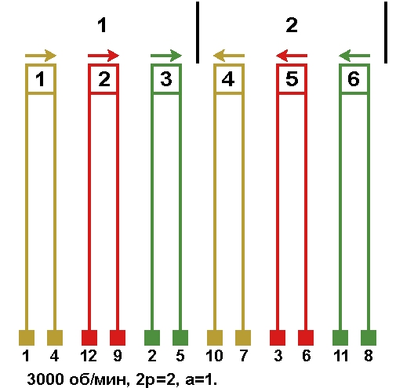
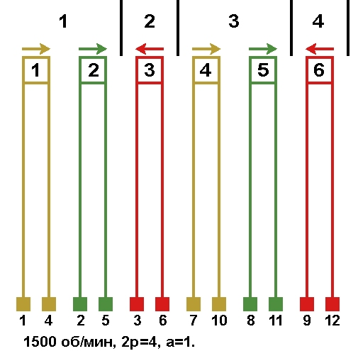
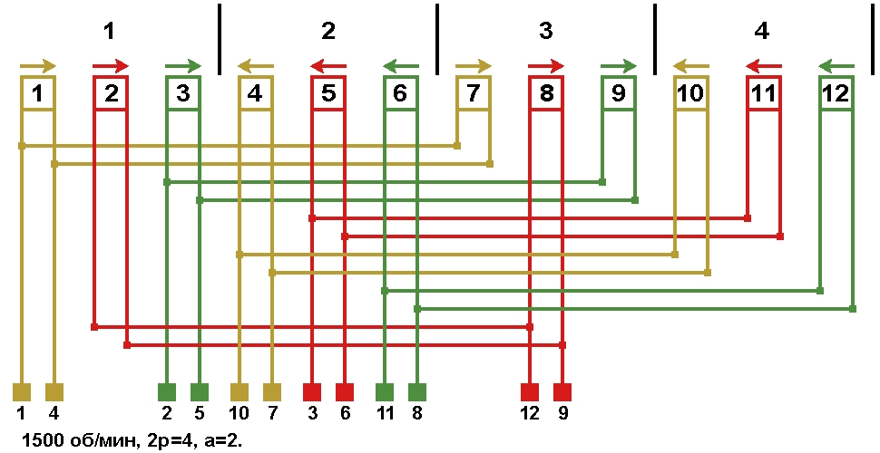
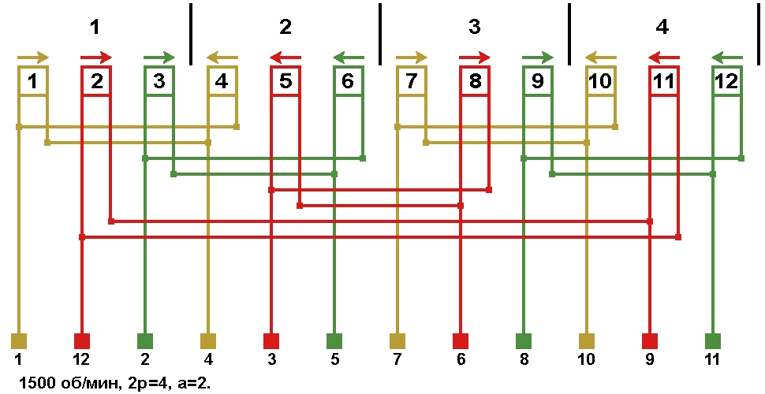
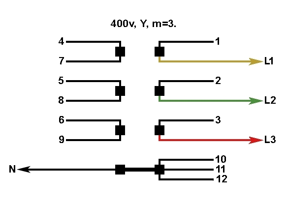
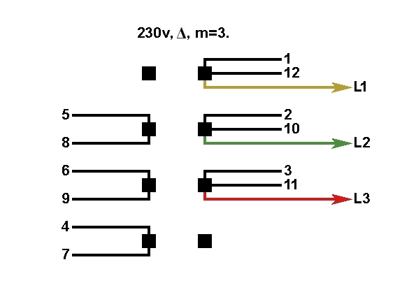
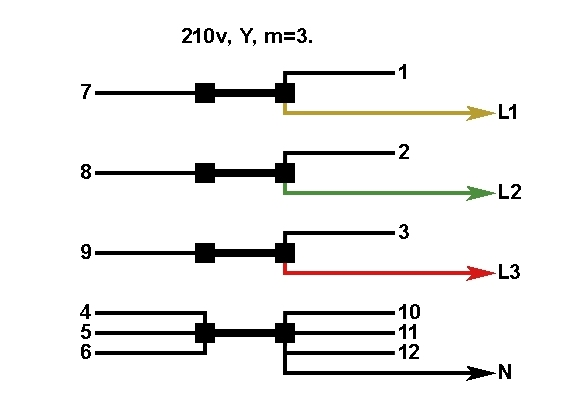
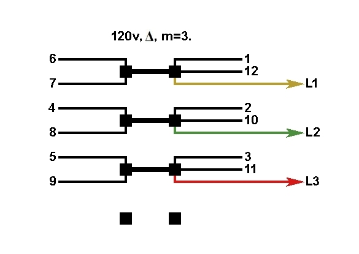
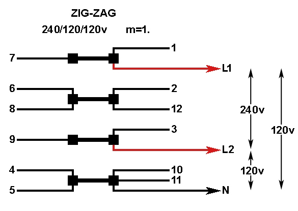

Перейти на главную страницу справочника.
Несколько схем соединений и подключения генераторов.
Обозначения выводов: 1=Т1, 2=Т2, 3=Т3 и т.д.
Схема соединений обмотки генератора 3000 об/мин.
Рис. 1. 
{kind=link}
Схема соединений однослойной обмотки генератора 1500 об/мин.
Рис. 2. 
{kind=link}
Схема соединений цепной, однослойной "вразвалку", одно-двухслойной, двухслойной обмоток генератора 1500 об/мин. Вариант 1.
Рис. 3. 
{kind=link}
Схема соединений цепной, однослойной "вразвалку", одно-двухслойной, двухслойной обмоток генератора 1500 об/мин. Вариант 2.
Рис. 4. 
{kind=link}
Схемы переключения напряжения на клеммнике генератора.
Трёхфазное напряжение 400 вольт, соединение в звезду. Число параллельных ветвей: а=1 для рисунков 1 и 2, а=2 для рисунков 3 и 4. 
{kind=link}
Трёхфазное напряжение 230 вольт, соединение в треугольник. Число параллельных ветвей: а=1 для рисунков 1 и 2, а=2 для рисунков 3 и 4. 
{kind=link}
Трёхфазное напряжение 210 вольт, соединение в звезду. Число параллельных ветвей: а=2 для рисунков 1 и 2, а=4 для рисунков 3 и 4. 
{kind=link}
Трёхфазное напряжение 120 вольт, соединение в треугольник. Число параллельных ветвей: а=2 для рисунков 1 и 2, а=4 для рисунков 3 и 4. 
{kind=link}
Однофазное напряжение 240/120/120 вольт, соединение зигзаг. Число параллельных ветвей: а=2 для рисунков 1 и 2, а=4 для рисунков 3 и 4. 
{kind=link}
Схема соединений двухслойной обмотки генератора 1500 об/мин. а=4.
{kind=link}
Несколько схем соединений якоря возбудителя синхронного генератора.
Схема соединений обмотки якоря возбудителя синхронного генератора 500 об/мин, а=2.
{kind=link}
Схема соединений обмотки якоря возбудителя синхронного генератора 500 об/мин, а=6.
{kind=link}